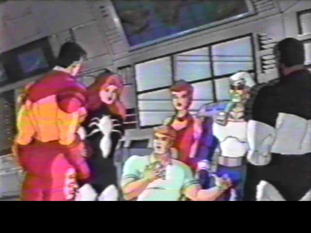
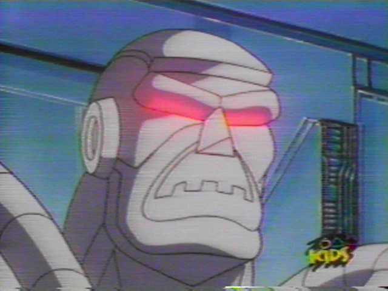
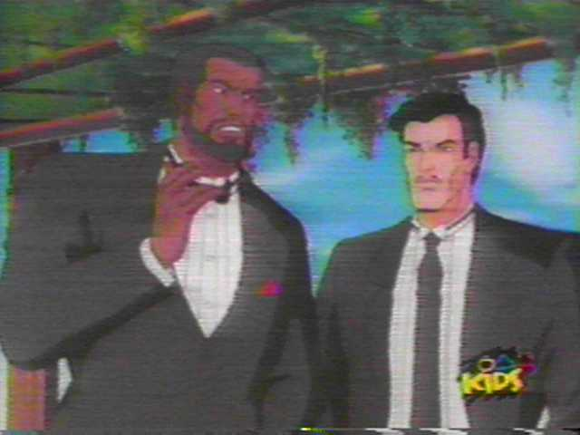
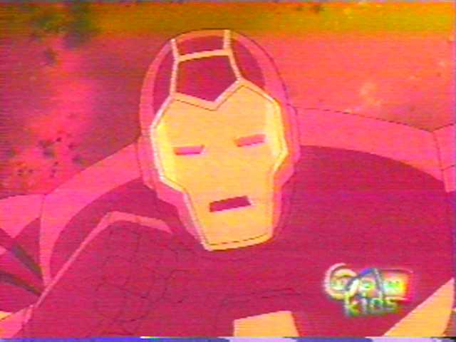
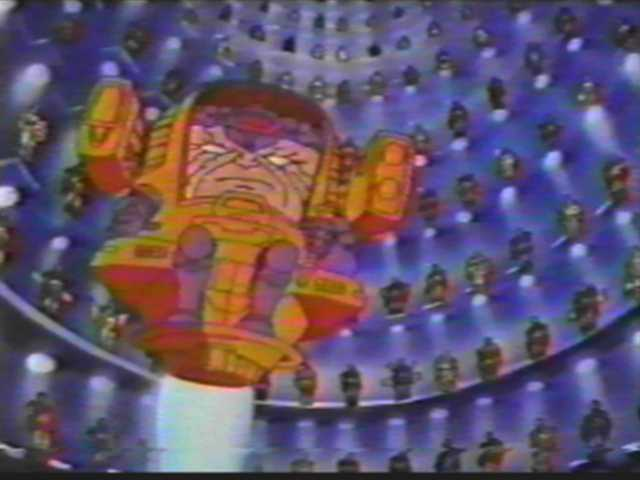
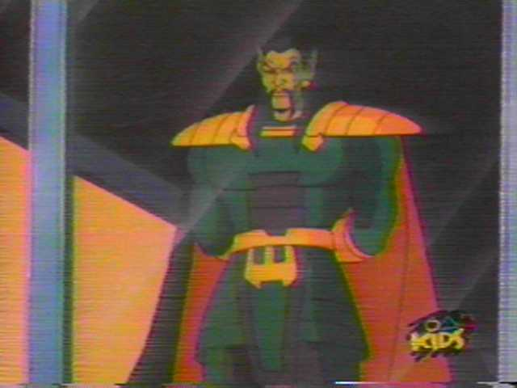
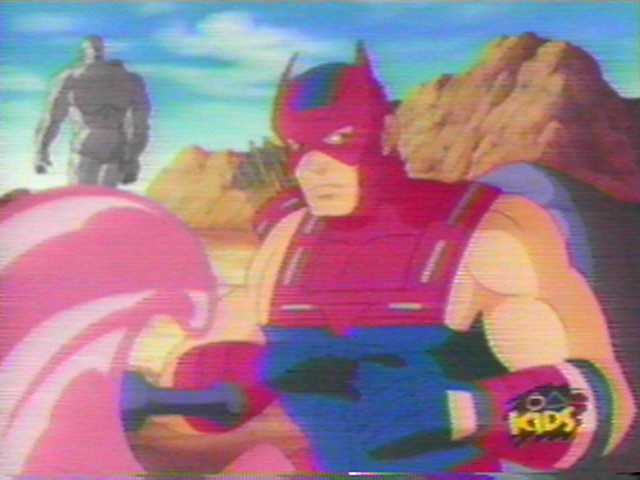

|
|
Animated Series of
I.) And the Sea Shall Give Up Its Dead  Using hypnosis to plant a strange device in a Russian submarine, the Mandarin creates an army of invincible Zombies with which he plans to infiltrate and take over Tony Stark's armory. His plan: to use Iron Man's armor to conquer the world. Iron Man battles to thwart this scheme in outer space and in the ocean's depths, with the help of War Machine, Spider-Woman, Century, Hawkeye, and the Scarlet Witch -- only to face Modok and the Mandarin's minions: Dreadknight, Whirlwind, Blizzard, and the Grey Gargoyle. II.) Rejoice! I Am Ultimo, Thy Delieverer!  Mandarin and Modok find and bring to life a gigantic alien robot, Ultimo, which has an unknown agenda of its own to fulfil. The Mandarin sets Ultimo off to destroy one of Stark's secret factories, but Ultimo breaks free and Iron Man must bring him down and also prevent the Mandarin from regaining control of the huge robot. III.) Data In, Chaos Out  The Mandarin steals and reprograms Tony Stark's designed military and communication satellites, thus creating a world-wide military and financial panic for which Stark is blamed. Stark and his forces must fight not only to recapture and reprogram the stolen satellites in deep space, but also to clear Stark's name before his business, Stark Enterprises, is destroyed.
IV.) Silence My Companion, My Death Destination  Julia Carpenter's daughter is kidnapped and Iron Man must save her. Will he be successful? Of course he will.
V.) The Grim Reaper Wears a Teflon Coat
When Tony is about to deliver the Grim Repear, a super fighter bomber jet, which is completely indestructible and undetectable, to the American Government, the Mandarin's forces steal it for the Mandarin. Iron Man and his team must find the Grim Reaper before the Mandarin can deploy it for his evil ends -- and also deliver it to the Pentagon, per Tony's government contract or lose Stark's industrial credibility.
VI.) Enemy Within, Enemy Without  The Mandarin's lackeys kidnap a model and Force Works must save her. But, why is Modok so interested in her safety?
VII.) Origin of the Mandarin  The Mandarin's origin is explained through a video diary explaining how he got his deadly rings of power. Or is it a real video?
VIII.) The Defection of Hawkeye  Hawkeye is accused of being a traitor to the Mandarin by the Force Works. He claims that he's innocent, but if he is, how do you explain the pictures of him with Justin Hammer?
RETURN TO IRON MAN'S INTRODUCTION PAGE
|